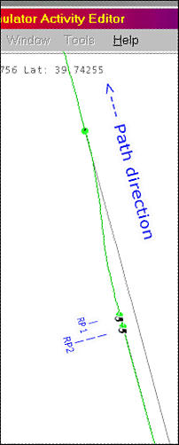
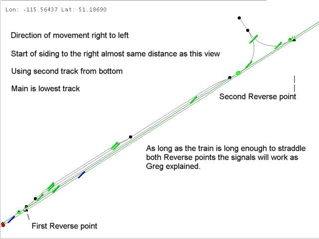

Say my player service is a slow freight. I have a faster AI train following behind. I route my player path into the passing loop. just before the exit signal I insert a Reverse Point (RP). Then, as close as I can behind the 1st RP I insert a 2nd RP. I pull into the loop and stop short of the 1st RP. The mainline signals clear and the AI train passes through. I then move forward and pass the 1st RP. As soon as the block is clear the exit signal clears and I'm on my way.
I think the assumption has been that RPs are something you have to approach and cross with the end of your train. They're not, they're activated if your train is in contact. They also represent discontinuites in a path, with each successive segment (reversed path) activated by touching the RP preceding it.
The above works because your player path stops at the RP until your train moves over it. Until you get there the AI path is able to extend on to the mainline ahead of you and the AI train can overtake. By placing the 2nd RP immediately behind the 1st, when you touch the 1st you also straddle the 2nd. BOTH RPs are activated simultaneously and your path is now projecting out of the loop. No shuffling back and forwards.
If I'm far enough ahead of schedule, I simple pull straight through to the RP and am cleared on my way without waiting. Or,if I want I can sit there all day and watch the traffic go by simply by never passing over the 1st RP.
The same principle can be used for other purposes. I'll often set up an activity with an engine pulling out of a siding and backing on to a train while AI traffic is cleared on on to the mainline ahead of me. Simply use RPs to get your engine to the point of backing on to your train and ensure that there is a RP straddled by your waiting carriages. As you couple up, those carriages become part of your player service, the RP they straddle is activated, your forward path set and the signal will clear if the block is free.
You can get also get AI trains to pass each other as well. The trick is that the following train must be following closely behind the first. As the first train enters the loop there is a period of time (which can be very short) when it is clear of the main but hasn't yet hit the RPs. Hence its path is no longer cluttering up the main and hasn't yet been projected forward. Just as when the diverted train is a player service, the following train can now 'project' its path forward past the loop and the first train stops and waits. Of course, unlike with a player train you can't stop short of the reverse points and wait for the following train to catch up, so if the following train is too far behind then the first train just runs through the loop and proceeds without stopping. Again, it takes less time to set up than to write down.
Some would ask why you would want the AI traffic leap-frogging down the line. If, like me, you're attempting to simulate a railway service, then you'll understand.
I start by creating a sort of dummy player service (short path in a siding) and create a master traffic file with all the services for a given period. Every service uses a full path. It starts somewhere (siding or terminal platform) real and ends somewhere real. Trains never just pop up on the mainline and then disappear. When I've created a complete master traffic file I then create player services that run as extras or just extract services from the master traffic file to use as player services (saving a new version of the traffic file with the 'borrowed' service removed..). So for me, every service must run on a true path. In a couple of hours you can create dozens of completely different activities based around the one master traffic file. Having AI trains performing in a prototype fashion just saves a lot of mucking around.
Note: the train must be able to fit entirely on the track between the node where the RPs are and the previous node. If the train is longer than this, there will be a failure of the path setup - the exit switch and signal will never operate for you.
Actually, the Route Editor will indicate a problem. If your train disappears when you get to the RPs, you will have a problem when you run the activity. I have found that the RE with all its shortcomings is accurate with signals. If it has a signal that won't change, that will also be the case when you run the activity. The AE may show Mexican Standoffs that won't actually happen but I have found it to be totally accurate when it shows signals not changing.
I proved the length problem entirely with the AE, I kept playing with train lengths/RP location until my train actually moved to the Red signal and waited instead of just disappearing. When I got to this point, I saved and tested - it worked entirely as advertised.
The reason this is a problem on the Kicking Horse Pass (KHP) route - most KHP passing tracks have sidings or wyes leading off, thus additional nodes. The main track does run full length without additional nodes. The problem with staying on the main and letting the AI do the run around is another MSTS bug shows up: AI trains, once slowed to a restricted speed, will never resume speed.
There is a solution to this problem. The key is that the RPs do not need to be placed closely together as firstly described - as long as part of the train is over both points at the same time, it will work. As long as there are no nodes between the 2nd RP and the rear of the train when the 1st RP is crossed it will work ok. Note that I'm referring to the order we placed the RPs with the 2nd actually being the one we reach first when we run the Activity.

If I move the 2nd RP anywhere left of the first Wye switch we will fail. The positioning of the first point does not appear to be critical. I moved it far enough that with normal running speeds, it's difficult to pass before the AI train gets signal control. I can see both departing signals and have found that as soon as the other signal changes from the Stop aspect, I can pass the 1st RP and still allow the AI to keep the path.
If what you describe works when there are track nodes around then that is wonderful. If there aren't then it is still worth placing RPs close together as the path can then be used by trains of any length without further editing. After all, if you place them too far apart you're back to the problem I was trying to solve - that of having to reverse your train.
Which brings this full circle. The whole point about using double RPs in this way is that the RPs are a means to an end and, although the path does a quick double shuffle, the train doesn't. It has nothing to do with reversing!
What this is really about is stopping your path in its tracks so that it no longer projects forward (until you want it to). I'd love to call it a 'broken path' but Microsoft/Kuju already use that term for something else. I really want to invent something to describe the collective effect of two RPs in conjunction so I'll call it a "Stop in Tracks" point, SIT for short. A SIT point lets your path sit in one place.
Most of this discussion has been about using SIT points to allow AI trains to pass your player train, but SIT points have loads of other possibilities. Here's a few (not all tested):
- On some lines 'starter' signals were placed at the departure end of every platform. In manually signalled territory the starter sometimes wasn't cleared for stopping trains until the train was in the platform. A SIT point adjacent to the platform could simulate this.
- If you want a train to slow to a sustained crawl, place a SIT point after every block signal. The effect should be to progressively clear the path forward one block at a time, with the signal always clearing to its most restrictive aspect.
- Got a long branchline joining a mainline with the junction protected by a signal? Place a SIT point short of the junction signal and you can delay your clearance on to the main.
- Variation on the above. Imagine a yard with a long lead (to avoid the node problem)on to the mainline, once again with the mainline protected by signal on the branch track. Your path enters the yard, proceeds through the lead and on to the mainline. With a SIT point just before the signal protecting entrance to the main, you should be able to shunt the yard to your heart's content. Your path won't project forward on to the main and stop traffic there until you pull forward to the SIT point. The virtual equivalent of "asking for the road".
It'll be interesting to see what works and what doesn't.
As far as putting them RPs far apart - well it all depends on if the piece of track has any nodes between the entry and exit as well as the length of the train. Remember, the RP locations are customised for each train's path. Long train - perhaps split RPs, short train close RPs.
Another thing to keep in mind, if you watch the speed and timing so you know about where the player train will be located when the AI train appears, you can then perhaps place the RPs more distant from the signal. This way, the AI train already has its path and signals set by the time the player train crosses the RPs. This way the player has much leeway in a stopping point and yet still gets the signal when its time.
Experiment....!